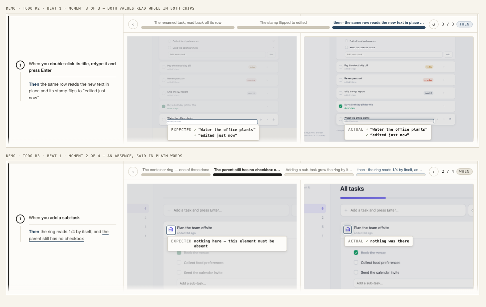
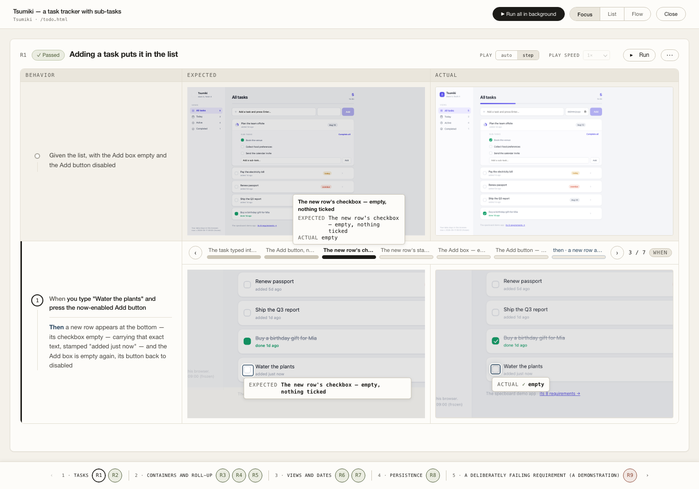
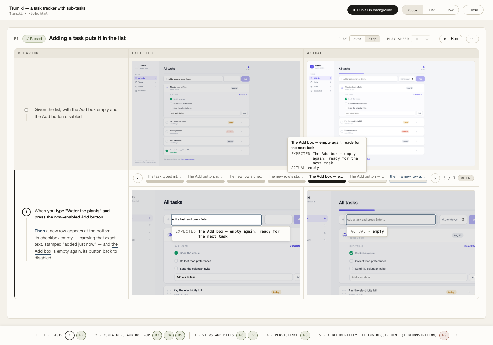
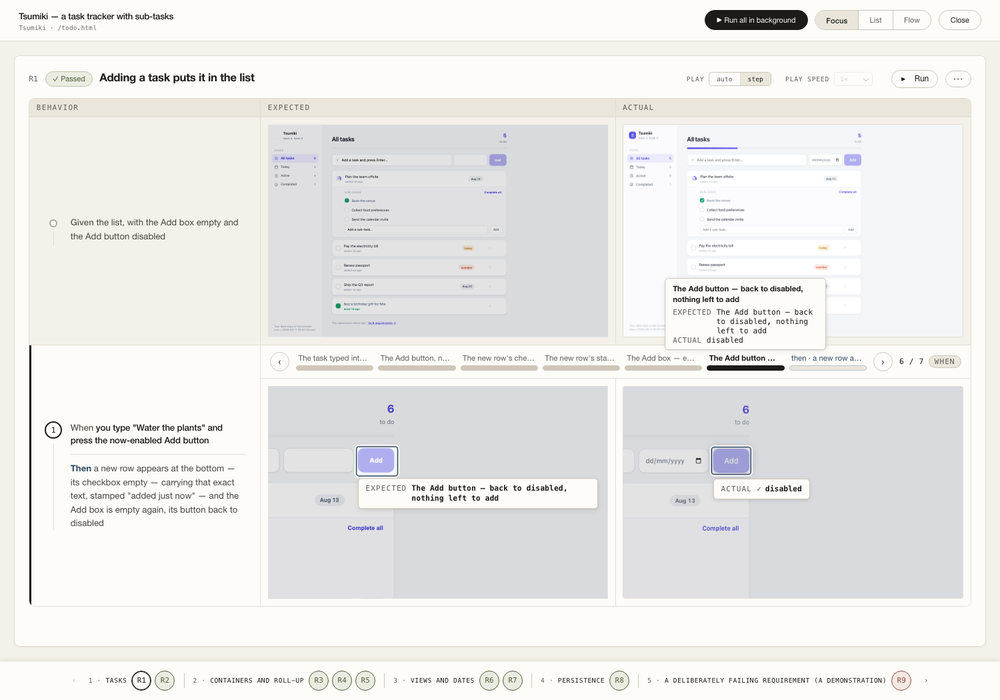
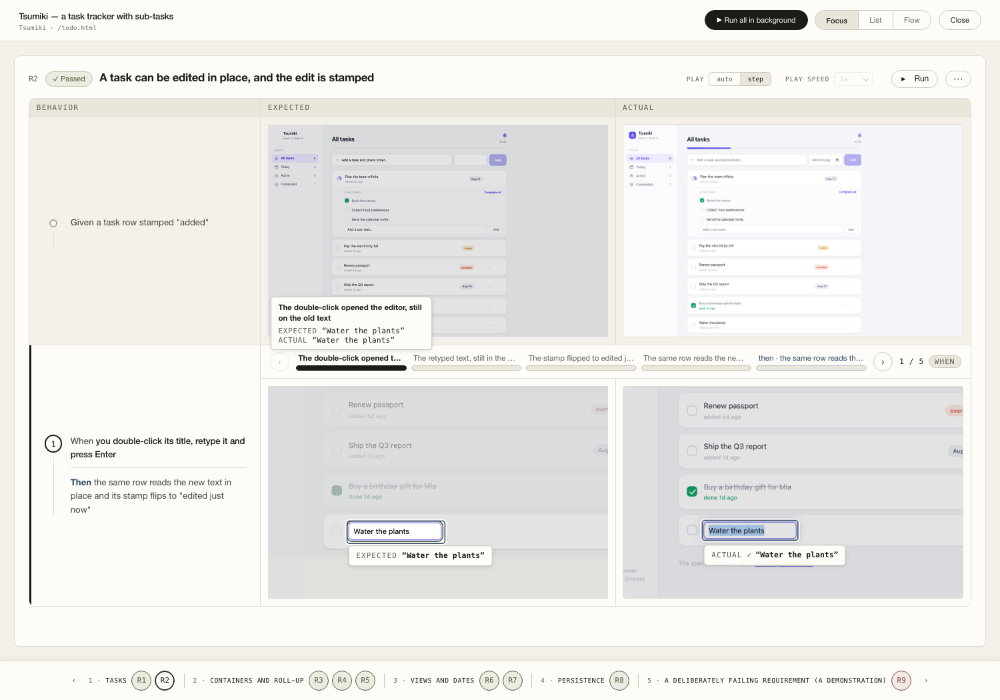

How to write a test case — the specboard method
2026-09-06 · the ONE recipe every screen follows, worked end-to-end on the todolist demo (Tsumiki, its real R1–R9). Accepted and baked into the kg-deep and kg-e2e skills in 0.47.0; refined 0.47.1 by the human's two rulings on the demo it produced — film the When from its first gesture (step 3) and an absence is anchored and worded (steps 3 and 4) — and again in 0.47.2 by three more: the user's action is named on the picture (steps 3 and 4), no trailing recap frame (step 3), and every remaining inheritance-ringed absence gets its anchor. (Corrected in place, rule 6: this read "a proposal … on your yes this bakes into" — it is no longer a proposal.)
A test case is a short film of one promise.
One page state → one user action → facts a camera can check.
If you cannot film it, you cannot prove it — rewrite the promise until you can.
STEP 1Pick the promiseswhich test cases exist
→
STEP 2Write the sentencesGiven · When → Then
→
STEP 3Plan the filmwhich moments get photographed
→
STEP 4Aim the camerafocus element + explaining words
STEP 1Which test cases should exist?
Walk five buckets, in this order, and write one requirement per promise. The todolist's own nine fall out of them exactly:
Create it, change it, finish it, remove it — the lifecycle of the screen's main noun (here: a task).
R1 addR2 edit + stampR9 delete, reversibly
Anything the app computes — counts, rings, roll-ups — proven with exact numbers on the seeded data.
R3 ring 1/3→1/4R4 roll-up both waysR5 "To do" counts leaves
Each filter/view shows the right rows and its badge agrees; time-derived chips under a frozen clock.
R6 views + badgesR7 overdue/today chips
The state that must outlive a reload (or sign-out, or navigation) comes back byte-for-byte.
R8 reload
The user's slip is safe: undo, confirm, nothing lost. Often the best film on the board.
R9 undo window
Include / exclude test: a requirement earns its card only if deleting the feature would make its test fail. One requirement = one promise a user could say aloud. If two requirements would be proven by the same assertion, they are one requirement. Styling-with-no-behavior gets no card.
STEP 2Write the Given / When → Then
✕ How it usually gets written
Given a task
When you edit it
Then it updates correctly
- "a task" — which one? Not reproducible.
- "edit it" — no hand could film that. What is pressed?
- "correctly" — not a fact. A camera cannot check "correctly".
- Nothing can fail specifically — so nothing is proven.
Given a task row stamped "added"
When you double-click its title, retype it and press Enter
Then the same row reads the new text in place and its stamp flips to "edited just now"
- Given = one exact state from the frozen seed.
- When = physical verbs a hand performs on screen.
- Then = separate highlighted facts — each becomes its own photographed claim.
Exact words, exact numbers"stamp flips to edited just now", "ring reads 1/4" — never "updates", never "correctly".
Every noun must be visibleIf a Then names something no screen shows, either surface it in the UI or declare the gap (intentGap) — visible debt, never a quiet pass.
Say absences out loudR3: "…and the parent still has no checkbox". An absence is a claim like any other, and the board shows it in plain words.
One When = one actionTwo actions = two beats (R4 has two When→Then beats: tick, then untick). Each beat is its own film.
Given comes from the golden seedOne deterministic seed + a frozen clock (?now=). R5's "seven open leaves" and R7's "due two days ago" only mean something because the seed never moves.
Count the trap, not just the happy numberR5's best line: "down by two, not three — the container is never a unit of work". Name the wrong answer the design forbids.
STEP 3Plan the film — which moments get photographed
A beat is one ordered list of moments: the Given, then one photograph per highlighted fact, then the result. R2's beat, as the recipe produces it:
Pay the electricity bill today
Buy a birthday gift done
Water the plants added 1d ago
The whole page, exactly as seeded. Captured once per screen state and shared by every beat that starts here.
Pay the electricity bill
Buy a birthday gift
Water the plants▌
The FIRST gesture, photographed first — the double-click has opened the editor and it still holds the OLD title. Proof the gesture landed, and the only frame in which "in place" means anything yet.
Pay the electricity bill
Buy a birthday gift
Water the office plants▌
Then the changed value — photographed while it is still in the box. (It's gone by the after-photo; without this frame the film skips the act.) Both When-frames' labels name the gesture, because those words land on the picture itself.
Pay the electricity bill
Buy a birthday gift
Water the office plants edited just now
One photo per fact. The stamp is its own claim, ringed on the smallest element that carries it.
5 · THEN — the row · the film ends here
Pay the electricity bill
Buy a birthday gift
Water the office plants edited just now
The result, where it happened. Same row, same position — "in place" is itself a checkable fact. And this is the last frame — there is no sixth.
NO RECAP FRAME — the film ends on its last fact (the human, 2026-09-06: "The last small step (for show the list is meaningless) for expected and actual, please remove it"). The board used to add a moment of its own after the ones above: the beat's resting state, captioned with the whole Then, its chip a CHECKLIST of every claim the beat had made, ringing whatever the beat happened to ring last. On R1 that was six chips piled on the Add button, moment 7 of 7. Since every fact of a Then became its own filmed moment (the soft claim), that frame only re-said what the frames before it had already shown — beside a picture that was about none of them. It is gone from the strip and from both cells. Two things follow for the author: order the beat so its last proveVisible is the one the film should close on, and expect a beat that films a single fact to have a single moment and no strip to walk — if a beat is worth walking, its Then has more than one fact and each deserves its own photograph. Nothing leaves the harvest: the after frame is still captured, still folded, and is still the base every intended state is drawn from. This is a display rule.
Film the When from its FIRST GESTURE (the human, 2026-09-06, on this very beat: "It should start from user click on the title to start edit, instead of the edit is finish at the first step"). The moment the interaction begins is photographed first — the editor the double-click just opened, still holding the old value; the control just pressed; the row still there before the delete — and only then the changed value, then the facts. A beat that opens on the retyped text shows the answer before the question, and the gesture the When names never appears in the film at all. Both moments are needed and neither substitutes for the other: the value is gone from the box the instant it is committed.
An absence is ANCHORED and WORDED (the human, 2026-09-06: "The 'nothing there' is weird"). A claim on a thing that is not there has nothing to measure, so its ring silently keeps whatever the beat rang last — on R1 that photographed the Add button under a chip talking about the new row's checkbox. So an absence claim names the place the absent thing would live and says what it is in its own words: proveVisible(row.locator('.cb.on'), MISSING, "The new row's checkbox — empty, nothing ticked", { soft: true, anchor: row.locator('.cb'), phrase: 'empty' }) → EXPECTED the checkbox — empty, nothing ticked · ACTUAL ✓ empty. With no anchor the ring stays where it was — honest and visible, never invented — and the generic sentence stands. A state with no readable text (a disabled button) is claimed the same way: .go:not([disabled]) is MISSING exactly while the button cannot be pressed.
The show-it rule (the R9 lesson): a When that acts on a thing rings that thing before the action and the place it changed after — and only then the number. R9's film must show the row being deleted, the Undo appearing, and then "To do" still reading 5. A film whose only frames ring a counter claims the action happened without ever showing it.
Camera rules: ONE camera per beat, framing the union of all its rings — never re-cropping per moment. No two photographs identical (if two moments look the same, one of them isn't proving anything). Every control the When names must be inside the frame.
STEP 4Aim the camera — the focus element and the explaining words
Renew passport overdue
Water the office plants
edited just now
Buy a birthday gift done
The stamp flipped to edited just nowEXPECTED "edited just now"
The focus element = the smallest thing that carries the valueThe stamp — not the row, not the list, not the page. A container never gets the ring when a leaf holds the number.
The label is read TWICE — write it as a sentenceIt names the moment in the strip under the pictures and it leads the chip ON the picture (the human, 2026-09-06: "It's not obvious enough when user action is … mention in the explaining text box"). A picture of a filled box is a state; without words on it, nobody can tell a hand just filled it.
A Then-moment's label = a fragment of the Then"The stamp flipped to edited just now" — the requirement's own words, one line, full text on hover.
A When-moment's label NAMES THE GESTURE"You double-clicked — the editor opened on the old text"; "You retyped the title — the new text, still in the box"; "You typed the task — it sits in the Add box". Never "The retyped text, still in the box": that describes the state and leaves the hand out of the film.
The chip = the label, then the exact promised wordsThe moment's own sentence on top, then EXPECTED with the requirement's words and ACTUAL with what the app showed. Same label on both cells — one wording source, so the two halves can never name a moment differently.
An absence says what is not thereEXPECTED speaks the claim's own label — "the checkbox — empty, nothing ticked" — and ACTUAL the author's short phrase: "✓ empty". The generic pair ("nothing here — this element must be absent" / "✓ nothing was there") is the fallback for a claim that named neither. An empty input value is an absence too: EXPECTED “” tells a reader nothing.
The context stays visibleEverything the moment is not about is faded once — still readable, so both cells read as the same page.
What this looks like on the real board today — R2's edit and R3's absence claim, live on :4175:

…and the same two rules after the human's refinement — R1's absence claim now ringing the new row's own checkbox and speaking its own words (EXPECTED the checkbox — empty, nothing ticked · ACTUAL ✓ empty), where before it rang the Add button:

R1's new fact, filmed — the Add box empty again, and its button back to disabled:


And R2 opening on its first gesture — the editor the double-click just opened, still holding the old title:

The rule card — what gets baked into the skills
- Five buckets, in order: lifecycle · derived numbers · views & chips · survival · the mistake path.
- A requirement exists only if deleting the feature fails its test; one promise per card; same assertion ⇒ same card.
- Given: one exact state from the golden seed, under the frozen clock.
- When: physical verbs; one action per beat.
- Then: exact words and numbers; every fact separately claimable; absences said out loud; name the forbidden wrong answer where it teaches.
- Every noun in a Then must be visible on screen, or the gap is declared as visible debt.
- Moments = Given + the When from its FIRST gesture + the changed value + one photo per fact, ending on the last of them — no trailing recap frame (the human, 2026-09-06).
- Show it: ring the acted-on thing before, the changed place after, the counter last.
- One camera per beat; every named control in frame; no two photos alike.
- Focus = the smallest element carrying the value; never a container over a leaf. An absence rings the place the absent thing would live (anchor), never a neighbour by accident.
- Words: a moment's label is read TWICE — in the strip AND leading its chip on the picture (the human, 2026-09-06). A Then-moment's label is a fragment of the Then; a When-moment's label NAMES THE GESTURE ("You double-clicked — the editor opened on the old text"), never just the state. Chips carry the promised words verbatim under it; an absence speaks its own label and its phrase, the generic sentence only as fallback.
- Write the test red-first, watch it fail, and let each claim be soft — the beat reaches every fact and fails once at the end with the whole list.
Where this method bites — said before you agree
Exact numbers are brittle on purpose. Change the seed and half the Thens go red — that is the design (the seed is golden and frozen), but it means seed changes are requirement changes and get treated with the same care.
Absences must be written to be shown. The board can only film an absence someone claimed. The method forces the sentence ("still has no checkbox") — reviewers must reject a Then that leaves its absences implicit.
OPEN OPTION — draw the gesture itself. The human's ruling on naming the action offered two ways: "either show it out (really edit it and shown to user) or mention in the explaining text box". Only the second is built. The first would draw the gesture at the point it happened — a cursor or press glyph on the ringed control, an insertion caret in the field, a double-click mark — burned into the frame at capture time so both cells carry it. It is the stronger answer (a picture that shows the hand needs no sentence at all) and it is not built: it needs a gesture kind recorded per moment (`proveVisible` knows the target, not the verb that produced it), a glyph in the design system, and a re-harvest of every board. Noted here so the choice is visible, not lost.
A label now lands in two places, so a lazy label costs twice. The moment's words are read in the strip AND on the picture. A label like "check meta" was merely unhelpful in a caption; over the picture it is the only thing telling a reader what they are looking at.
Some facts have no screen surface. An API-only fact or a geometry gets a declared gap, not a photo. The debt list is part of the product — it must stay short and be read.
Sources: the todolist demo's real spec/todo/prd.md (R1–R9 quoted verbatim), CLAUDE.md's rules 1–3 and 8, the watchable-beat and asserted-values-visible rulings, and the 2026-09-02 one-stepper/named-moments decisions. On your yes: the rule card lands in skills/kg-deep (steps 1–2) and skills/kg-e2e (steps 3–4), each rule with its todolist example.